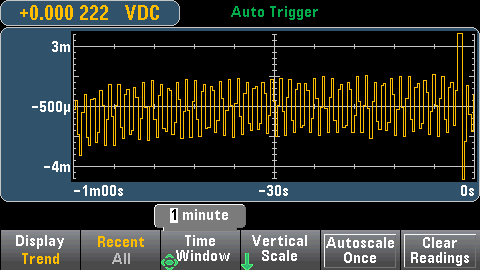
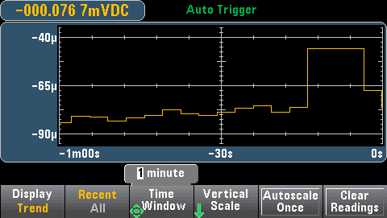

This topic describes trend chart behavior for the 34461A/65A/70A only, in Continuous measurement mode. The trend chart is not available for the 34460A.
To select the trend chart, press [Display] followed by the Display softkey:
In the Continuous measurement mode, the trend chart shows data trends over time:

Data is collected and displayed in pixel columns as described below.
The Recent/All softkey shows either all of the data in the trend chart (All) or just the most recent data (Recent). Neither selection clears reading memory.
In All mode, the trend chart displays all readings being taken and builds from left to right. After the display is filled, the data becomes compressed on the left side of the display as new data is added on the right side of the display.
In Recent mode, the trend chart displays data taken during a specified amount of time. For the 34465A/70A, this time is selected with the Time Window softkey (1 minute to 1 hour). For the 34461A, this time is fixed at 1 minute, and there is no Time Window softkey. Changing this setting clears the trend chart but does not clear reading memory, statistics or histogram data.
The trend chart display area is 400 pixels wide by 147 pixels high. A pixel column is 1 pixel wide by 147 pixels high. Each pixel column on the trend chart display represents 1/400 of the Time Window value; the Time Window setting determines the amount of time represented by each pixel column as follows:
When the reading rate is faster than the time per each pixel column, the column will represent multiple readings. In this situation, the trend chart draws a vertical line in each pixel column showing the maximum to minimum measurement values acquired during that time period:
When the reading rate is slower than the time per pixel column, some pixel columns may represent no readings. In this situation, the trend chart continues with a horizontal line across the pixel:

The Vertical Scale softkey specifies how the current vertical scale is determined.
Press Vertical, to change the scaling:
If you have enabled limits, the (Limits) softkey also appears. This sets the vertical scale to match the limits.